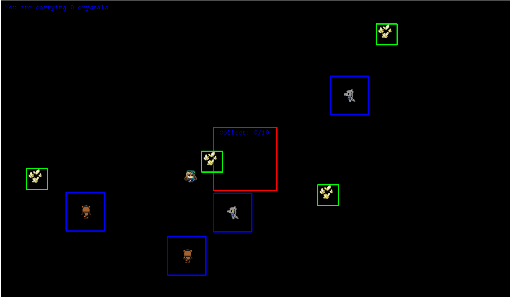
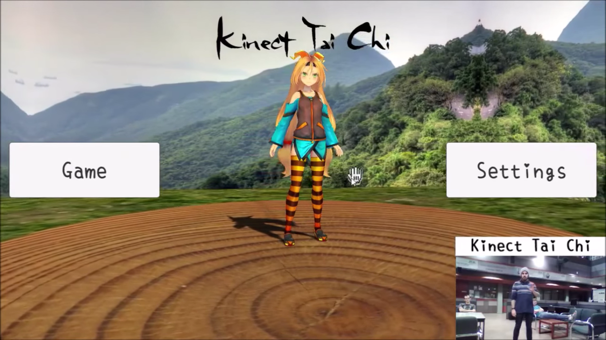
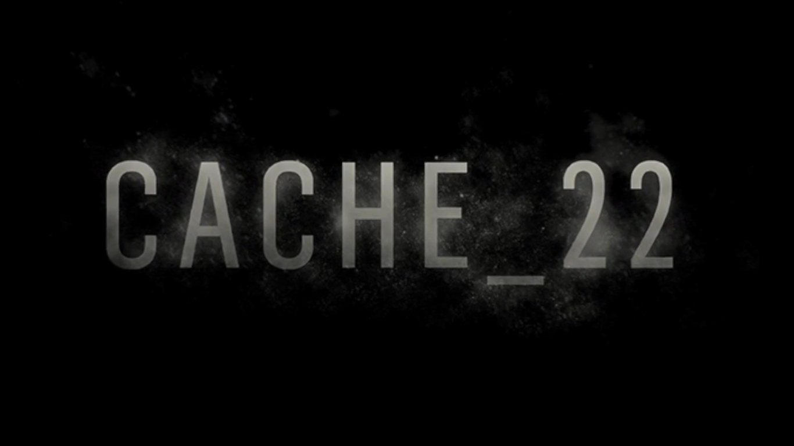

Ben Hunter - Homepage
About Me
Full Name:
Benjamin Keith Hage Hunter.
Education:
Undergrate student at the university of Alberta, BSc with Specialization in computing science and certificate in game development.
Interests:
I love playing and designing games first and foremost. I also played basketball, soccer, and volleyball in high school and still play when I can in these hectic times. Drumming is another one of my hobbies, as I have been playing for over 15 years. I love puzzles, riddles, and logic puzzles and believe there is no better feeling than solving a problem by programming.
Goals:
I hope to one day call myself a game designer, as I think it would be the perfect combination of logic, creativity, and design, and really intersect my interests. I also enjoy working on projects and creating software that can help and excite people, and hope to do so!.
Skillset
Programming Languages And Tools I have Experience with
-

PYTHON
-
C++
-
C
-
PHP
-

SQL
-

HTML
-
CSS
-
Unity
-
3dsMax
Overview
I Have developed several projects both individual and group, spanning several genres in my undergraduate education. Specific to computing, I have made game modifications, artificial intelligence programs, statistical simulations, research tools, web and native applications, 3D models, and computer games. I have knowledge in design patterns, algorithms, and development tools which make me a reliable programmer and developer. I have done a lot of work on interdisciplinary projects as well, and so have experience working with people of many different backgrounds.
Professional History
Projects I Have Developed and Contributed to
-
Keith To The Past
Currently in development for INTD450 at the university of Alberta, Keith To The Past is a retro style, single player, 8-bit computer game. The game follows an un-named protagonist as they search for Keith, however Ketih is gone, and never exists in the game. The game story is truthfully exploring reactions and emotions that come from in the 5 stages of grief - or the 5 stages of Keith. Prototype expected in April.
-
Tai Chi Kinect
Tai Chi Kinect aims to help people of all ages play Tai Chi. Using the Microsoft Kinect and the Unity game engine,the player mimics an expert on the screen as their motion is tracked and evaluated by the Kinect. Researchers will use this software mainly to train children with cognitive challenges, in the hopes that the slow methodical movement of Tai Chai will help with their social and cognitive development.
-
Cache22
Cache_22 is a story-based rhythm game built in the Neverwinter Nights engine using the Aurora Toolset.The game was created in an interdisciplinary team with 3 other programmers, a musician, and an artist. My primary role was as lead designer with a focus on level and character design, story, and external mechanics. Winner at the UofA CMPUT 250 Game Development Awards for best technical achievement.